03-opencv-下
图片卷积
图像滤波是尽量保留图像细节特征的条件下对目标图像的噪声进行抑制，是图像预处理中不可缺少的操作，其处理效果的好坏将直接影响到后续图像处理和分析的有效性和可靠性。
线性滤波是图像处理最基本的方法，它允许我们对图像进行处理，产生很多不同的效果。首先，我们需要一个二维的滤波器矩阵(卷积核)和一个要处理的二维图像。然后，对于图像的每一个像素点，计算它的邻域像素和滤波器矩阵的对应元素的乘积，然后加起来，作为该像素位置的值。这样就完成了滤波过程。
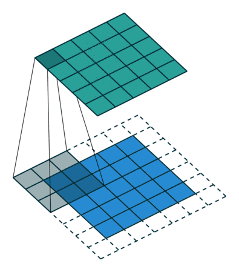
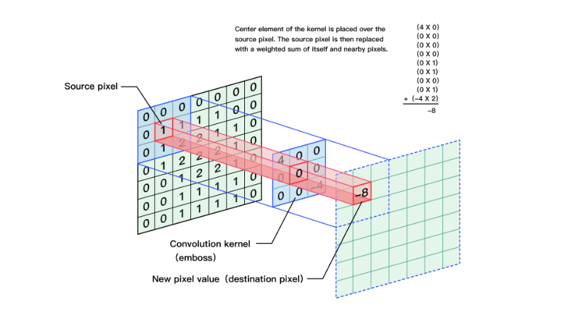
对图像和滤波矩阵进行逐个元素相乘再求和的操作就相当于将一个二维的函数移动到另一个二维函数的所有位置，这个操作就叫卷积
卷积需要4个嵌套循环，所以它并不快，除非我们使用很小的卷积核。这里一般使用3x3或者5x5。而且，对于滤波器/卷积核，也有一定的规则要求：
- 滤波器的大小应该是奇数，这样它才有一个中心，例如3x3，5x5或者7x7。有中心了，也有了半径的称呼，例如5x5大小的核的半径就是2
- 滤波器矩阵所有的元素之和应该要等于1，这是为了保证滤波前后图像的亮度保持不变。当然了，这不是硬性要求了。
- 如果滤波器矩阵所有元素之和大于1，那么滤波后的图像就会比原图像更亮，反之，如果小于1，那么得到的图像就会变暗。如果和为0，图像不会变黑，但也会非常暗。
- 对于滤波后的结构，可能会出现负数或者大于255的数值。对这种情况，我们将他们直接截断到0和255之间即可。对于负数，也可以取绝对值。
均值滤波
将卷积核内的所有灰度值加起来,然后计算出平均值,用这个平均值填充卷积核正中间的值,这样做可以降低图像的噪声,同时也会导致图像变得模糊
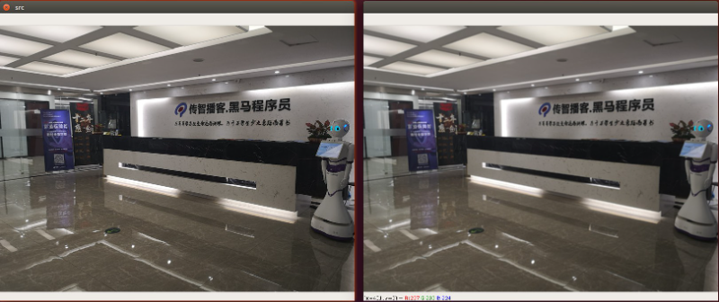
示例代码:
高斯模糊
采用均值滤波降噪会导致图像模糊的非常厉害,有没有一种方式既能保留像素点真实值又能降低图片噪声呢?那就是加权平均的方式. 离中心点越近权值越高,越远权值越低.
但是权重的大小设置非常麻烦,那么有没有一种方式能够自动生成呢? 这个就是需要用到高斯函数
高斯函数呈现出的特征就是中间高，两边低的钟形
高斯模糊通常被用来减少图像噪声以及降低细节层次。
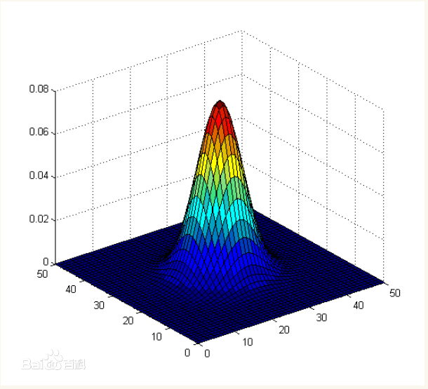
示例代码:
中值滤波
对邻近的像素点进行灰度排序,然后取中间值,它能有效去除图像中的椒盐噪声
操作原理:
卷积域内的像素值从小到大排序
取中间值作为卷积输出
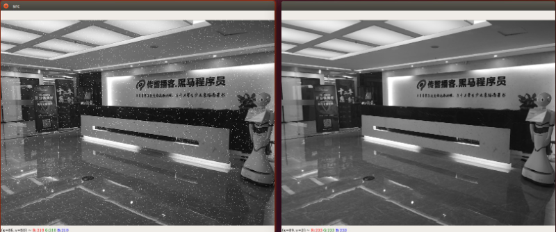
示例代码
Sobel算子
Sobel算子是像素图像边缘检测中最重要的算子之一，在机器学习、数字媒体、计算机视觉等信息科技领域起着举足轻重的作用。在技术上，它是一个离散的一阶差分算子，用来计算图像亮度函数的一阶梯度之近似值。在图像的任何一点使用此算子，将会产生该点对应的梯度矢量
- 水平梯度
- 垂直梯度
- 合成
为了提高计算机效率我们通常会使用: G = |Gx|+|Gy|
这里我们使用sobel卷积算子来查看脑干图像
图片顺序: 原图---> x 方向sobel ----> y 方向sobel ----> xy合在一起
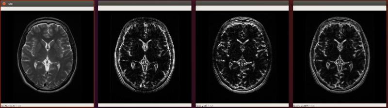
示例代码
由于使用Sobel算子计算的时候有一些偏差, 所以opencv提供了sobel的升级版Scharr函数,计算比sobel更加精细.
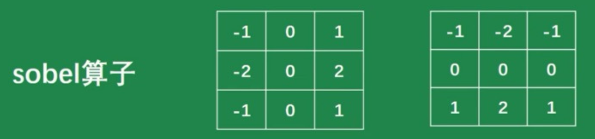
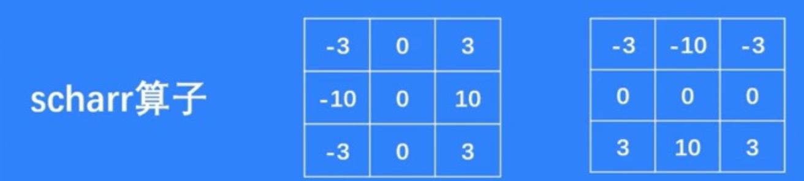
下面是使用Scharr计算出来的边缘图像
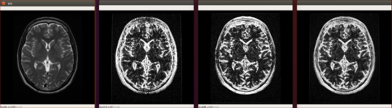
示例代码
拉普拉斯算子
通过拉普拉斯变换后增强了图像中灰度突变处的对比度，使图像中小的细节部分得到增强,使图像的细节比原始图像更加清晰。
- 普通
- 增强型
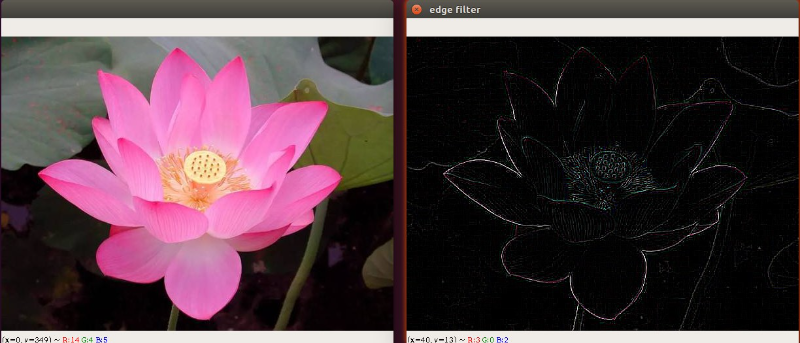
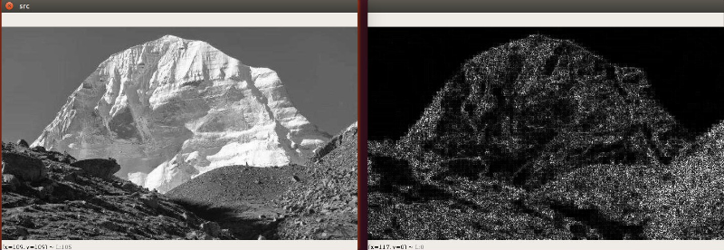
canny边缘检测算法
Canny算法由John F.Canny于1986年开发，是很常用的边缘检测算法。
它是一种多阶段算法，内部过程共4个阶段：
- 噪声抑制（通过Gaussianblur高斯模糊降噪）:使用5x5高斯滤波器去除图像中的噪声
- 查找边缘的强度及方向（通过Sobel滤波器）
- 应用非最大信号抑制（Non-maximum Suppression）: 完成图像的全扫描以去除可能不构成边缘的任何不需要的像素
- 高低阈值分离出二值图像（Hysteresis Thresholding）
- 高低阈值比例为T2:T1 = 3:1 / 2:1
- T2为高阈值，T1为低阈值
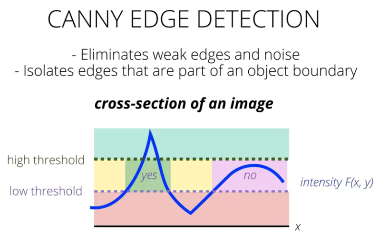
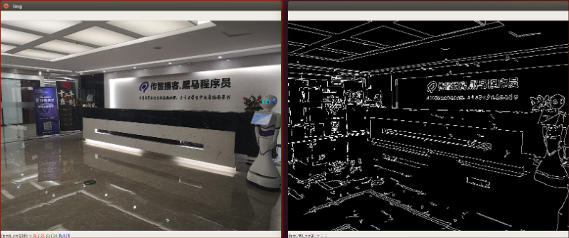
示例代码
双边滤波
双边滤波（Bilateral filter）是一种可以保边去噪的滤波器，是结合图像的空间邻近度和像素值相似度的一种折衷处理，同时考虑空域信息和灰度相似性。该滤波器是由两个函数构成，一个函数是由几何空间距离决定滤波器系数，另一个由像素灰度差值决定滤波器系数。对于黑白图像等可以消除细腻的纹理而简化图像，但同时保留图像的整体形状不变；对于彩色图像，可能会产生卡通效果。
在opencv中,双边滤波的api已经提供好啦!
src: 输入图像
d：该空间距离参数表示滤波核的直径，d> 5滤波非常慢，建议对实时图像处理使用d = 5，对于需要消除大量噪声滤波的离线图像处理，可以设置d = 9。
sigmaColor：在滤波时选取像素灰度差值范围，决定了周边像素点能参与到滤波中来。与当前像素点的像素值差值小于sigmaColor的像素点能参与到当前的滤波中。sigmaColor越大，说明周围有更多的像素点能参与到运算中。sigmaColor=0，滤波失去意义；sigmaColor=255，直径d范围内所有点都参与运算。
sigmaSpace：坐标空间滤波器的sigma值。该值越大，空间滤波的范围越广，即更多的像素将被包括在滤波过程中。
双边滤波器可以很好的保存图像边缘细节而滤除掉低频分量的噪音，但是双边滤波器的效率不是太高，花费的时间相较于其他滤波器而言也比较长。
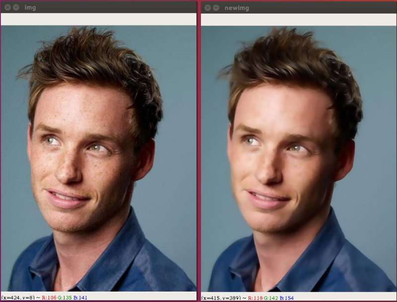
补充知识点
锐化滤波
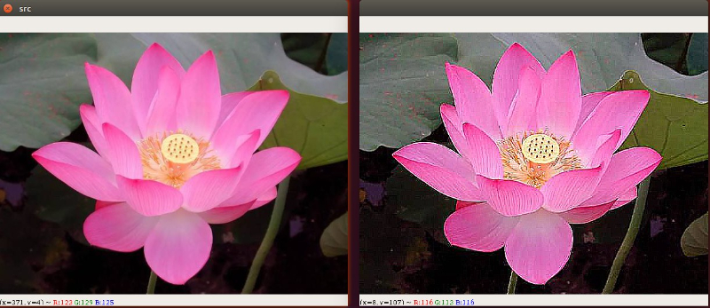
图像的锐化和边缘检测很像，首先找到边缘，然后把边缘加到原来的图像上面，这样就强化了图像的边缘，使图像看起来更加锐利了
实际上是计算当前点和周围点的差别，然后将这个差别加到原来的位置上。另外，中间点的权值要比所有的权值和大于1，意味着这个像素要保持原来的值。
我们还可以按照公式来创建锐化滤波核:
示例代码
霍夫变换
霍夫直线变换
霍夫直线变换(Hough Line Transform)用来做直线检测
为了加升大家对霍夫直线的理解,我在左图左上角大了一个点,然后在右图中绘制出来经过这点可能的所有直线
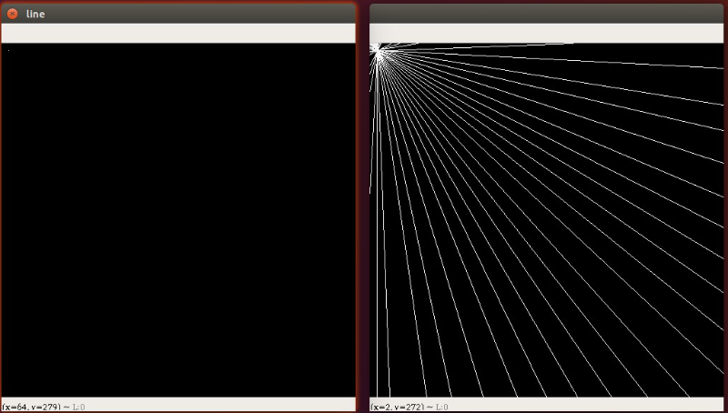
绘制经过某点的所有直线的示例代码如下,这个代码可以直接拷贝运行
霍夫概率变换
[codeblock]练习：寻找棋盘中的直线
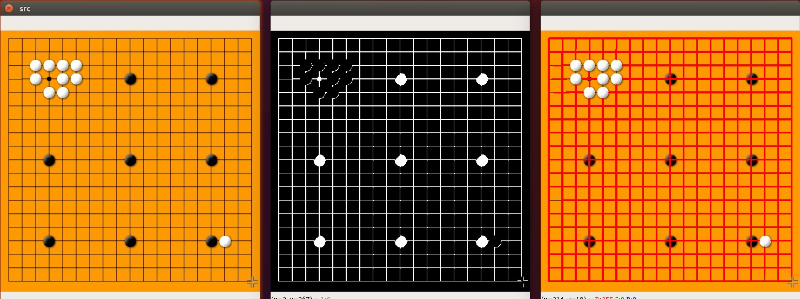
示例代码如下:
霍夫圆
一个圆可以由以下公式表示
，其中
是圆心,r是半径。圆环需要3个参数来确定，所以进行圆环检测的累加器必须是三维的，这样效率就会很低，因此OpenCV使用了霍夫梯度法这个巧妙的方法，来使用边界的梯度信息，从而提升计算的效率。
使用步骤：
- 霍夫圆检测对噪声敏感，先对对象做中值滤波
- 检测边缘，先把可能的圆边缘过滤出来
- 根据边缘得到最大概率的圆心，进而得到最佳半径
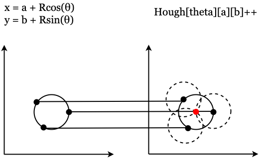
OpenCV的Logo检测结果：
- 参数及代码
寻找棋盘中的棋子
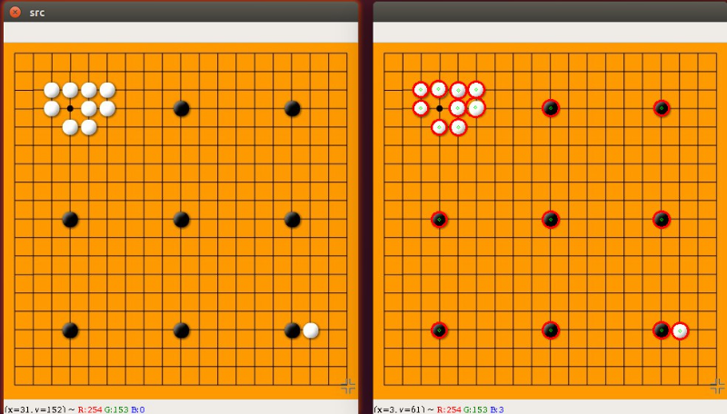
边缘与轮廓
- 基于图像边缘提取或二值化的基础寻找对象轮廓
- 边缘提取的阈值会最终影响轮廓发现的结果
- 主要API有以下两个
findContours发现轮廓drawContours绘制轮廓
查找轮廓
- 轮廓检索模式
RETR_EXTERNAL | 只检测最外层轮廓 |
RETR_LIST | 提取所有轮廓，并放置在list中，检测的轮廓不建立等级关系 |
RETR_CCOMP | 提取所有轮廓，并将轮廓组织成双层结构(two-level hierarchy),顶层为连通域的外围边界，次层位内层边界 |
RETR_TREE | 提取所有轮廓并重新建立网状轮廓结构 |
- 轮廓检索算法
CHAIN_APPROX_NONE | 获取每个轮廓的每个像素，相邻的两个点的像素位置差不超过1 |
CHAIN_APPROX_SIMPLE | 压缩水平方向，垂直方向，对角线方向的元素，只保留该方向的重点坐标，如果一个矩形轮廓只需4个点来保存轮廓信息 |
CHAIN_APPROX_TC89_L1 | Teh-Chinl链逼近算法 |
CHAIN_APPROX_TC89_KCOS | Teh-Chinl链逼近算法 |
绘制轮廓
绘制外切圆
实现步骤:
- 读取图片
- 将图片转成一张灰色图片
- 对图片进行二值化处理
- 使用findContours查找轮廓
- 对轮廓进行处理
网球案例
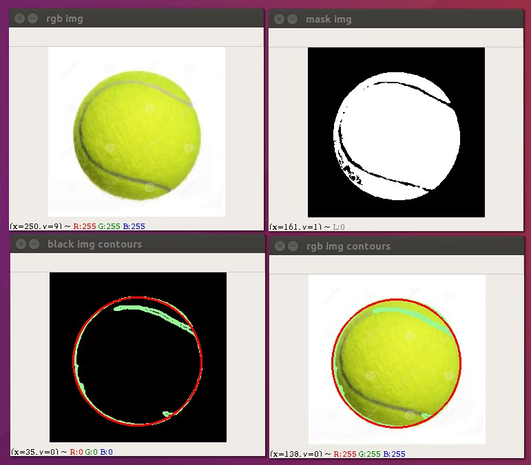
实现步骤:
- 读取图片
- 过滤出球的颜色
- 使用轮廓检测
- 找到球的中心点
- 展示信息
形态学变换
膨胀与腐蚀
形态学变化是基于图像形状的一些简单操作。操作对象一般是二值图像，需要两个输入，一个是我们的原图，另一个是3x3的结构元素(内核)，决定了膨胀操作的本质。常见的操作是图像的膨胀和腐蚀。以及他们的进阶操作注入Opening、Closing、Gradient等等。（参考）
结构元素的形状
MORPH_RECT | 矩形 |
MORPH_ELLIPSE | 椭圆形 |
MORPH_CROSS | 十字型 |
膨胀Dilation
跟卷积操作非常类似.有图像A和3x3的结构元素,结构元素在A上进行滑动.计算结构元素在A上覆盖的最大像素值来替换当前结构元素对应的正中间的元素
膨胀的作用：
- 对象边缘增加一个像素
- 使对象边缘平滑
- 减少了对象与对象之间的距离
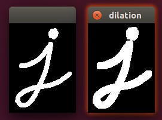
示例代码
腐蚀Erosion
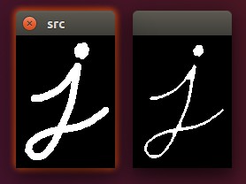
腐蚀和膨胀过程类似,唯一不同的是以覆盖的最小值替换当前的像素值
侵蚀的作用：
- 对象边缘减少一个像素
- 对象边缘平滑
- 弱化了对象与对象之间连接
示例代码
开操作Opening
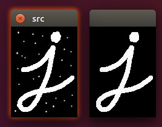
先腐蚀，后膨胀，主要应用在二值图像或灰度图像
先腐蚀: 让当前窗口中最小的颜色值替换当前颜色值
后膨胀: 让当前窗口中最大的颜色值替换当前颜色值
作用：
- 一般用于消除小的干扰或噪点（验证码图的干扰线）
- 可以通过此操作配合结构元素，提取图像的横线和竖线
示例代码
去除验证码上面的干扰线
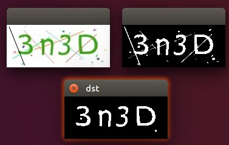
闭操作Closing
先膨胀，后侵蚀
一般用于填充内部缝隙
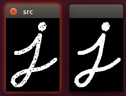
示例代码
小结
形态学变换中还有一些其它的变换,大家可以自行尝试查看执行效果
距离变换
Opencv中distanceTransform方法用于计算图像中每一个非零点距离自己最近的零点的距离，方法输出的信息为距离而不是颜色值，图像上越亮的点，代表了离零点的距离越远。
可以用来细化轮廓，或者寻找物体的质心！
方法参数说明：
[codeblock]src：输入的图像，一般为二值图像
distanceType：所用的求解距离的类型，有CV_DIST_L1, CV_DIST_L2 , or CV_DIST_C
mask_size：距离变换掩模的大小，可以是 3 或 5。对 CV_DIST_L1 或 CV_DIST_C 的情况，参数值被强制设定为 3, 因为 3×3 mask 给出 5×5 mask 一样的结果，而且速度还更快。
因为distanceTransform返回的图像数据是浮点数值，要想在浮点数表示的颜色空间中，数值范围必须是0-1.0，所以要将其中的数值进行归一化处理。
distanceType类型介绍
DIST_USER | User defined distance. |
DIST_L1 | distance = |x1-x2| + |y1-y2| |
DIST_L2 | the simple euclidean distance |
DIST_C | distance = max(|x1-x2|,|y1-y2|) |
DIST_L12 | L1-L2 metric: distance = 2(sqrt(1+x*x/2) - 1)) |
DIST_FAIR | distance = c^2(|x|/c-log(1+|x|/c)), c = 1.3998 |
DIST_WELSCH | distance = c^2/2(1-exp(-(x/c)^2)), c = 2.9846 |
DIST_HUBER | distance = |x|<c ? x^2/2 : c(|x|-c/2), c=1.345 |
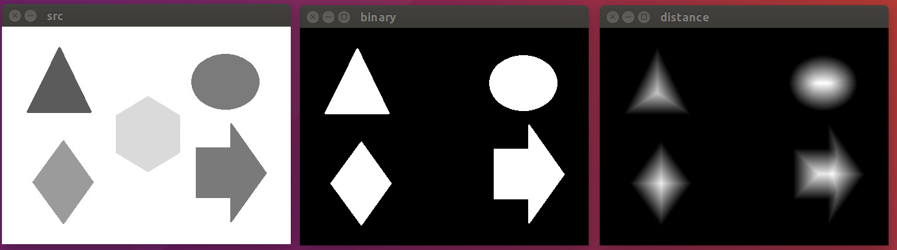
车道线检测
本节我们使用opencv来完成一个车道线检测的案例,下图为案例最终处理的结果
完成这样的案例我们需要经历哪些步骤呢 ? 我们先来思考一下解决问题的思路.当前情况下,摄像头拍出了很多的东西,例如路边的杂草远方的山.但是在我们自动驾驶的过程中,我们并不需要这么多东西,所以我们要考虑提取感兴趣的区域.有了感兴趣的区域之后,我们接下来就需要来识别道路.大家可能会想道路可能会有弯道,但是在小范围内,它还是直线,所以我们可以使用前面我们学过的霍夫直线来进行检测
这张摄像头拍摄到的照片
这张是我们使用canny边缘检测算法得到的图片
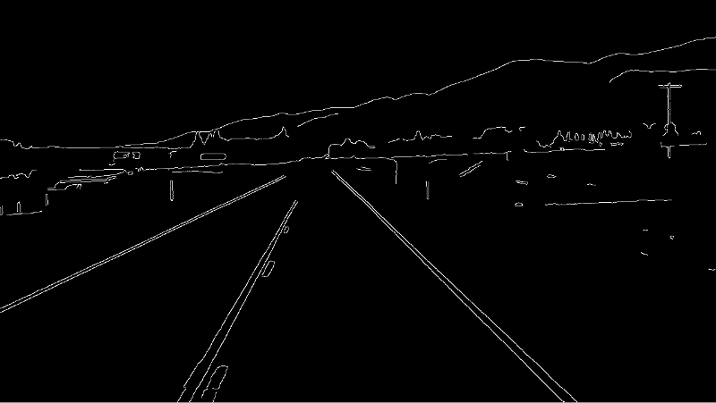
然后使用多边形截去不感兴趣的区域
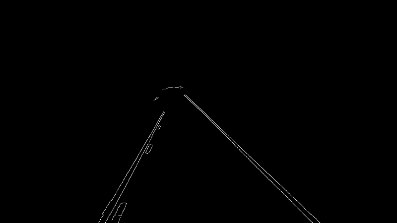
通过以上三个步骤之后,下面我们就可以使用霍夫直线的方式,提取到车辆直线啦!
示例代码
注意：可能会出现Could not load the Qt platform plugin “xcb”错误，
安装pip install opencv-python-headless,
如果不能解决问题，则需要安装sudo apt install --reinstall libxcb-xinerama0